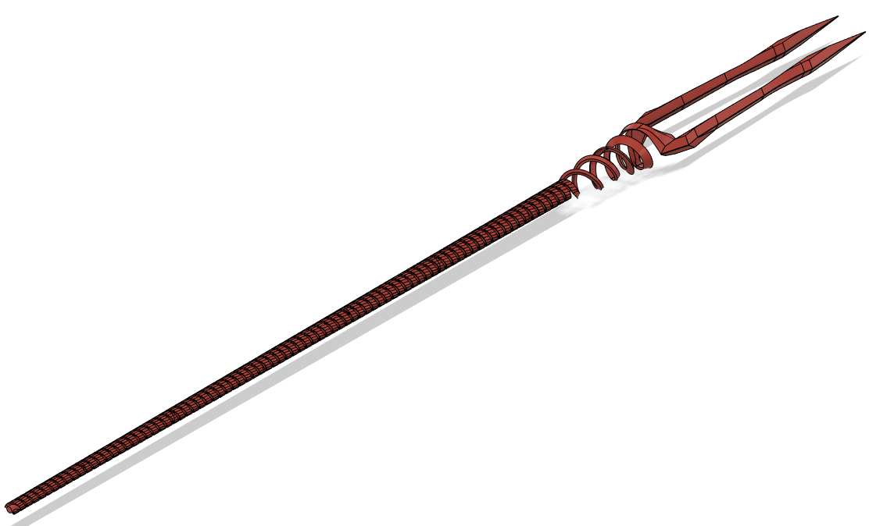

Lance of Longinus (From Neon Genesis Evangelion)
Model Description
Sometime in 2024, I finally got around to watching Neon Genesis Evangelion. Even if it's not that enjoyable to everyone, I believe it's something that you should watch at least once given how much it's influenced pop culture.
Of course, I was enamored by the intricate design of the Lance of Longinus. So, ever up to the challenge, I tried replicating it myself using my own 3D modeling skills.

The good news is I made the design. The bad news is that it's so computationally heavy that I cannot find a way to slice it without my computer crashing. I couldn't even cut the model to fit the standard 220x220x220mm base plate, either.
With this project, I learned how to use spirals/coils and perhaps I also learned to know how many spirals/coils are too much.
3D Printer Settings
Maximum length: ~210 cm
Maximum width: ~11.7 cm
Maximum height: ~8.8 cm
Slice at your own discretion.
I would've used my general 3D printer settings if I did print this:
3D printer: Creality Ender 3 Pro
Slicer: Ultimaker Cura
Filament type: PLA
Layer Height: .2mm
Wall/Top/Bottom Thickness: .8mm
Infill: 20%
Printing Temp: 200 degrees C
Base Plate Temp: 60 degrees C